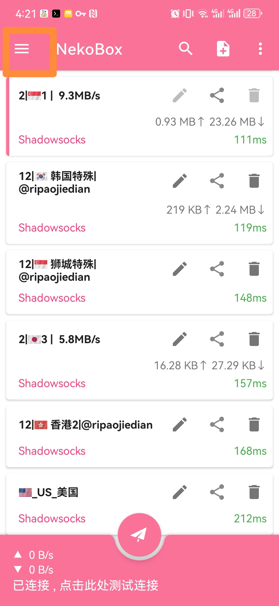

<div class="container">
    <h2>V2rayNg 教程</h2>
    <p>V2rayNg 是一个功能强大的网络代理工具，支持多种协议和传输方式。</p>
    <h2>V2rayNg 使用教程</h2>

    <h3>第一步：适用平台</h3>
    <p>Android 用户可以下载 V2rayNg 客户端，点击以下链接：<a href="path/to/V2rayNg.apk" download>V2rayNg.apk</a></p>

    <h3>第二步：配置 V2rayNg</h3>
    <ol>
        <li>下载 app 通过文件管理器安装 app。</li>
        
        <li>打开 app 选择左上角的<strong>三个横条</strong>打开左滑菜单。</li>
        
        <li>请联系我们购买订阅链接。得到链接后新增订阅。然后点击<strong>订阅分组设置</strong>，再点击右上角的<strong>加号/strong>新建分组。</li>
        
        
        <li>把得到的链接输入到<strong>可选地址</strong>, 打开启用<strong>自动更新</strong>。点击右上角<strong>对号</strong>保存分组设置。</li>
        
        <li>点击右上角<strong>竖着的三个点</strong>，点击<strong>更新当前组订阅</strong>，等待更新完成。</li>
        
        
    </ol>
    <h3>第三步：如何选择可用的节点</h3>
    <ol>
        <li>再点击右上角竖着的<strong>三个点</strong>，点击<strong>测试当前组配置真连接</strong>，等待测试完成。</li>
        
        
        <li>再点击右上角竖着的<strong>三个点</strong>，点击<strong>按测试结果排序</strong>。</li>
        
        
        <li>等待测试完成，选择延迟(绿颜色的带 ms 字样的)较小的且不能为负值的节点，单击即可。</li>
        
        <li>点击左上角的三个横条，打开左滑菜单，点击设置，打开分应用代理，选择自己需要走代理的 app 打勾就行。</li>
        
        
        <li>打开浏览器，访问 Google 试下吧。</li>
    </ol>
</div>
